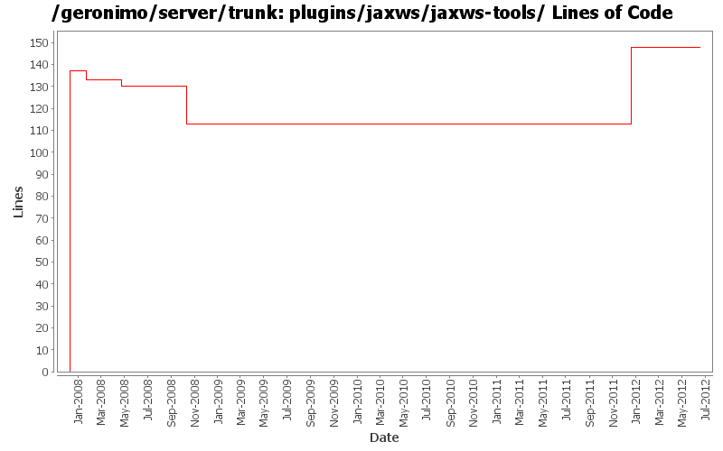

[root]/plugins/jaxws/jaxws-tools
 src
(0 files, 0 lines)
src
(0 files, 0 lines)
 main
(0 files, 0 lines)
main
(0 files, 0 lines)
 assembly
(1 files, 68 lines)
assembly
(1 files, 68 lines)
 history
(1 files, 14 lines)
history
(1 files, 14 lines)
 plan
(1 files, 22 lines)
plan
(1 files, 22 lines)
 resources
(0 files, 0 lines)
resources
(0 files, 0 lines)
 bin
(0 files, 0 lines)
bin
(0 files, 0 lines)
 contents
(0 files, 0 lines)
contents
(0 files, 0 lines)
 bin
(2 files, 345 lines)
bin
(2 files, 345 lines)

| Author | Changes | Lines of Code | Lines per Change |
|---|---|---|---|
| Totals | 20 (100.0%) | 205 (100.0%) | 10.2 |
| gawor | 5 (25.0%) | 152 (74.1%) | 30.4 |
| djencks | 5 (25.0%) | 40 (19.5%) | 8.0 |
| jdillon | 7 (35.0%) | 10 (4.9%) | 1.4 |
| kevan | 2 (10.0%) | 2 (1.0%) | 1.0 |
| xiaming | 1 (5.0%) | 1 (0.5%) | 1.0 |
Update trunk version to 4.0.0-SNAPSHOT
1 lines of code changed in 1 file:
GERONIMO-6240 Modify configs so that they use features as the bootstrap, and fix a few compile and test errors. Servers build but do not fully start
35 lines of code changed in 1 file:
GERONIMO-5290 fix many of the deprecation warnings from maven 3
1 lines of code changed in 1 file:
GERONIMO-4655 upgrade version to 3.0-SNAPSHOT, make a few things more consistent
1 lines of code changed in 1 file:
[maven-release-plugin] prepare branch 2.2
2 lines of code changed in 1 file:
GERONIMO-4654 assembly plugin beta-4 (and 3) works slightly differently from beta-2
1 lines of code changed in 1 file:
move files into contents directory
1 lines of code changed in 1 file:
refactor wsgen functionality into a separate plugin (part of GERONIMO-4351)
14 lines of code changed in 1 file:
Use project.
1 lines of code changed in 1 file:
Use ${project.build.outputDirectory}
2 lines of code changed in 1 file:
Drop *most* per-module legal muck, a few modules have additions to the standard... so left them in place for resolution later
0 lines of code changed in 2 files:
Use jar instead of resource-bundle (which comes from tools-m-p)
0 lines of code changed in 1 file:
Update LICENSE and NOTICE files. Merge from 2.1 branch
1 lines of code changed in 1 file:
upgrade trunk to 2.2-SNAPSHOT
1 lines of code changed in 1 file:
(GERONIMO-3747) Fixed parentage of module groups, though most still need to have their modules put into the proper groupId
Updated groupId of *everything* under framework/** to org.apache.geronimo.framework, and did my best to update all references
6 lines of code changed in 1 file:
(GERONIMO-3771) Moved maven-plugins/* to buildsupport/*, updated groupId to org.apache.geronimo.buildsupport
1 lines of code changed in 1 file:
install jaxws-tools as a plugin (GERONIMO-3695)
137 lines of code changed in 3 files: